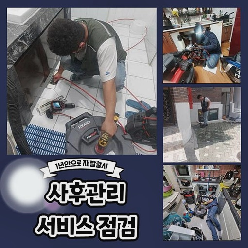
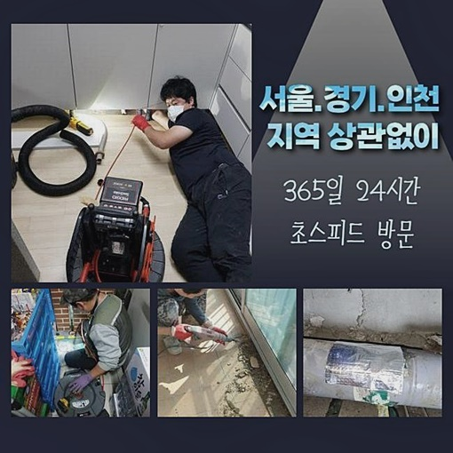
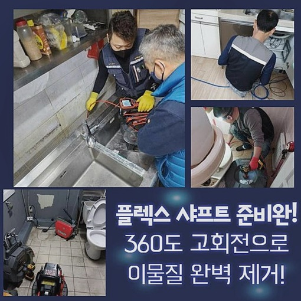
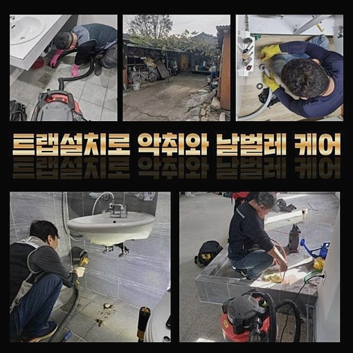
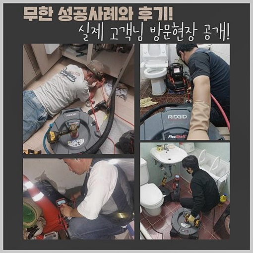
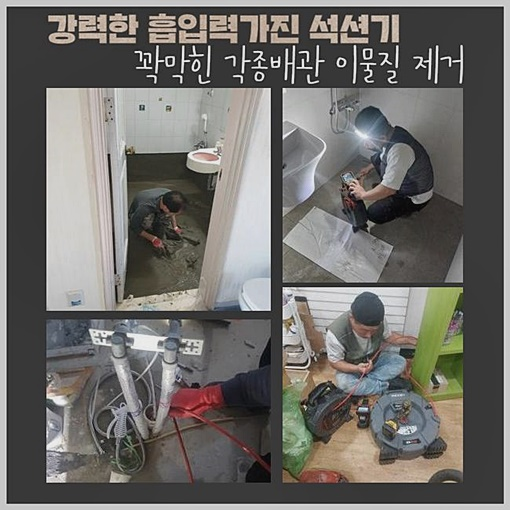
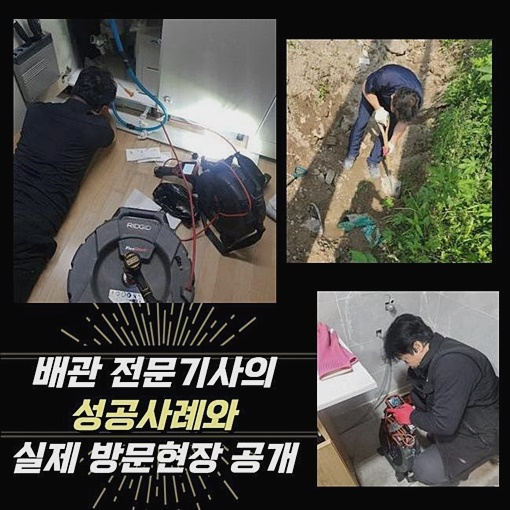

🏠 관악구 은천동화장실하수구뚫음 난곡동 하수구뚫어주는곳 배관설비공사
서울 관악구 하수구막힘 전문 시공 후기

📋 작업 개요
- 위치: 서울 관악구, 관악구, 서울
- 서비스 유형: 하수구막힘, 배관막힘, 역류해결, 뚫는업체, 배관청소, 고압세척, 설비공사
- 작업 일시: 2024. 9. 10. 17:08
- 업체명: 하수구수사대 (010-5615-2118)
🔍 문제 상황
관악구 은천동화장실하수구뚫음 난곡동 하수구뚫어주는곳 배관설비공사
상업적 건물이라던지 가정의 하수관이 막혀버리면 복합적인 증상이 발발하기때문에 조속하게 해결해야합니다
하수도는 건물들의 전체들을 연결하기에 일반적인 방식으로는 풀어내는게 만만치않다는걸 아는게 중요해요
때문에 필요한 장비들도 한두가지가 아니고 다양한 부위를 세척을 이행해야하는 까닭에 전문가와함께 효율을 갖춘 뒤 작업해줘야 하죠
저희전문진이 찾아뵈어 실행한 세척은 주거지와 상가가 혼재된 빌딩에서 야기된 결함을 시정한것입니다
주거공간까지 복합적으로 입주된 상태이므로 구조적측면을 알고있어야 배관장애를 시정할 수 있답니다
이처럼 고층건물들에서 통수가 이뤄지지 않을 시 하나의 증세가 생겨나는것이 아닌 여기저기에서 종합적인 문제들이 나타나는 사례들을 많이 보았어요
저희들이 현장에 방문드려 고객에게 증세와 관련하여 들었더니 갑작스럽게 주거지와 상가 부위별로 증세들이 발발했던 상태였죠
거주공간에서 생겨나는 증세와 상업시설에서 생겨나는 증상의 기조는 차이를 보여요
상가라면 어떻게 운영을 하는가에 있어서 배관의 내식성이나 원인들이 다르게 됩니다
가정에서 야기된 문제라면 집에서 배수관부터 관찰하지만

🔎 원인 분석
💡 전문가 진단: 정밀 진단 장비를 사용하여 슬러지의 고착 여부를 판명하고 타격/세척 작업을 실시했습니다.
오늘과 같은 수리를 이행할때는 공동배관을 살펴봐야 했죠
배관은 거주지등에 연결되서 밀집을 거쳐서 최종적으로 메인관을 빠져나와 바깥으로 결집되는 절차를 거쳐요
그 덕에 공용관로에 증상들이 생기면, 전체에 걸친 결함이 일어나는 건 시간문제입니다
더불어 메인배수관에 문제들이 발생되면 상당량의 잔해가 위치해있는걸 말하는것이기에 해결과정들이 어려운데요
일단 메인이 되는 관로를 진단할 목적으로 주차장쪽의 천장부를 관찰해야했습니다
공용관로의 경우 보통 천장부분에 연결된 사례들이 많아 사다리들을 사용하여 관로들을 들여다봐야하죠
저희의 전문가가 갔던 현장의 기조가 공용관로인 특성 탓에 안정적인 기기들의 가용이 필요했습니다
빨아당기는 석션기기로는 해결될 수 없었기에 먼저 샤프트장비를 이용하여 흡착물을 제거시켜 공간들을 확보해주었는데 문제가 심화된 상태면 고압수청소기를 통하는게 좋습니다
오히려 고압노즐분사는 내식성에 따라서 운용이 제한되기에 작업을 진행할때마다 사용되는건 아니라는것을 알고계시면 되겠습니다
저희들이 갔던 장소서 작업 이전에 내시경장치를 써서서 확실하게 기조를 관찰해야했습니다
내시경장치로 공용관 배관들을 보았더니 안쪽엔 기름류가 상당하여 물 막히는 현상이 굉장히 심한 모습이었습니다

🔧 작업 과정
이처럼 메인라인이 막힌다면 세대마다 잇는 연결부분에도 문제들이 발발하겠습니다
덧붙여 가지배관에서 수도를 쓸 시에 역류까지 발생되어 관로마다 뚫을 수 밖에 없는 불편이 불거져요
그리하여 막힌것을 완화시키는것이 먼저인지라 샤프트를 써서 기름때 제거를 시작했습니다
이와같이 큰 라인들을 재정비할때 구간별로 동시다발적으로 작업들을 수행하는게 효과가 좋죠
그리하여 배관 지점에 구멍들을 내주고 작업을 해주면 시간도 빨라지게 되요
금일도 천장의 배수관부터 세정을 시켜 욕실과 반대편 지점에서 진단한 후에 배관세척을 진행하게 되었어요
동시다발적 작업의 경우엔 당연하게도 효율성을 극대화 해 고착된 잔해들을 제거시킬수 있습니다
더불어 타공부위를 연 뒤 배수관에서 배출되는 오물들이 밑으로 튈 수 있기에 보양도 철저히 하여 위생적으로 흐를 수 있게 조치해주었죠
해당 사안처럼 보양시공을 꼼꼼히 하질못하고 작업의 사이즈를 키우면 오염물이 떨어져 주위가 오물들로 비위생적으로 변모하게되요
해당 지점은 욕실쪽과 연결된 지점이라 내부엔 이물들이 상당했습니다
때문에 샤프트장비를 쓰기엔 무리라고 판단했습니다
곧장 세척기기를 이용하여야 할 것 같아서 준비에 돌입했습니다
작업에 있어서 비용측면을 낮추고 기능은 챙긴 소형 고수압분사 장비를 사용했죠
고압세척의 경우 일시에 상당량의 청수를 쏘기에 정확도 높은 방향을 통해 작업하는것이 좋습니다
빨리 장애를 해결하는게 우선이겠으나 전문성을 갖춘 경험들이 뒷받침되어야합니다
메인배수관에 찌꺼기가 없게끔하기 위하여 청소하는 틈틈히 내시경으로 관찰해주는 과정도 반복했어요
증상이 해결되었는지 보기위하여 검사들을 실시해보았어요


✅ 작업 완료
증세들이 생겨났던 다양한 구간에서 증상들이 해결되었는지도 점검해보고 테스트하는 것을 완료했습니다
규모들이 큰 작업으로 계획수립이 우선이었는데 저희전문진이 계획을 제대로 수립하여 수월히 세척을 완료했죠
이처럼 불현듯 마주하게 되는 막히는 문제들은 점검을 이해하고 문제 양상에 맞게 효율을 갖춘 뒤 계획수립을 이행하는 절차가 필요해요
저희들은 디테일까지 집중하여 청소를 해드린답니다
해결이 요구될때 아무때나 요청하신다라면 되는 점 참고부탁드려요!




⚠️ 하수구 배관 막힘 예방 및 관리 가이드
- ✅ 머리카락, 비닐, 물티슈 등 물에 분해되지 않는 이물질은 하수구 유입을 절대 금지해 주세요.
- ✅ 하수구 거름망을 씌우고 모여진 이물질은 주기적으로 쓰레기통에 바로 비워주셔야 합니다.
- ✅ 배관 노후가 심할 경우 이물질이 더 쉽게 걸리므로 주기적인 배관 세척(고압세척 등)을 권장합니다.
- ✅ 작업 후 1년 이내 재발 시 하수구수사대에서 무상 A/S 보증 서비스를 제공합니다.
💡 핵심 정리
- 확실한 장비 작업(내시경 점검 및 샤프트 스케일링)으로 원인을 뿌리 뽑습니다.
- 작업 후 1년 이내에 동일한 부위 재발 시 100% 무상 A/S 서비스를 보장합니다.
- 서울 · 경기 · 인천 전 지역에 24시간 언제든 긴급 출동할 수 있도록 항시 대기 중입니다.
❓ 자주 묻는 질문 (FAQ)
🚨 서울 관악구 하수구막힘 문제로 고민이신가요?
정확한 원인 진단과 확실한 시공으로 재발 없는 해결을 약속드립니다.
24시간 긴급 출동 | 서울 · 경기 · 인천 전지역 | 1년 내 재발 시 무상 A/S